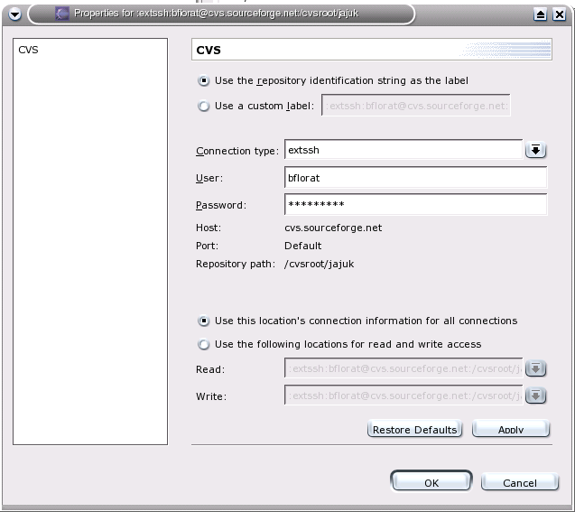

Welcome to new Jajuk developers ! Have fun.
Jajuk code and comments have
to be in English
natural language only.
It is mandatory to subscribe to Jajuk developer mailing list ( jajuk-developers@lists.sourceforge.net ) at http://lists.sourceforge.net/lists/listinfo/jajuk-developers as this list is the project main communication stream. You may also use and monitor the public Open Discussion forum (http://sourceforge.net/forum/forum.php?forum_id=315360)
We advice to use the Eclipse platform to develop. All following documentation (CVS...) deals with Eclipse only.
We assume you know CVS. If you are not so familiar with CVS, please read the CVS manual : http://www.cvshome.org/docs/manual/cvs-1.11.15/cvs.html.
The Connexion String is
:extssh:login@jajuk.cvs.sourceforge.net:/cvsroot/jajuk
Under
eclipse CVS repository location looks like (replace bflorat by your
login):

Make sure the whole project yet compiles and is in an acceptable stability state before committing something. if you feel your work not stable enough, keep it on your local workspace for the moment.
During a release process, please follow freezes (see release process part).
You should work most of the time in the HEAD branch.
If you start to code a complex feature full of impacts on the project and potentially dangerous for current release, please create your own branch for this feature and merge your work into the HEAD when you feel ready and when no release is planned for some weeks.
Jajuk releases (from 1.0) follow this version scheme: <major>.<minor>.<fix>. Example: 1.1.4 : Fourth fix release of second minor release of first major release.
When a new minor release starts, we create a maintenance branch used for fixes. Example: when starting 1.1 release in the head, we create a maintenance_1_1 branch. All fixable bugs found against minor version are double-fixed in the maintenance release and in the head of next minor release. For example, an issue discovered in 1.1 is fixed in the maintenance_1_1 branch AND in the head (future 1.2 release).
Major and minor releases are maintened during one minor releases (for example, 1.1 is maintened until 1.2 is released) and a fix pack release (x.y.z) is released ASAP if critical bug found or about every one or two weeks for minor issues.
In preferences / "Java/Code generation/Code and comments" or "Java/Code Style/Code templates", please import scripts/code_generation.xml file. This is a template for new java sources.
See default configuration:
Program arguments:

Only use UTF-8 for your source. Use preference screen to set it:

Check your .properties file uses correct encoding (especially under Eclipse 3.0 final) by selecting file/properties/info. If the file is in ISO8859-1, set UTF-8 instead.
You shouldn't have to use any provided ant script when under Eclipse environment. Two ant scripts are found in the tree:
scripts/build.xml : this is the stored build file packaged with the distribution and used in command line to recompile Jajuk using a standard installation. Do not use it under Eclipse.
scripts/build-dist.xml : this is the
ant script used by the packager to generate Jajuk distribution. You
shouldn't have to use it.
The Jajuk release process usually takes from 2 to 4 weeks.
The release process is announced with a message in the developer mailing list (make sure you subscribed to this list). All developments are then frozen in the repository. English labels are frozen as well to allow translators to begin their work.
Translators can complete their translations during the entire process. Note that translators can translate current releases even outside release process periods. Translator guide is available here.
Testers qualify and developers fixes bugs discovered during this period. We try to release a release candidate (rc) every 2 or 3 days during this period. Note these bugs and release are internal only so please do not use the public bug tracker to report them but use developer list instead. All these rc are internal only and should not be distributed to public. Testers can base their work on this qualification form. A mail is send on developer list at each rc.
When we estimate that the last rc is stable enough, the packager releases it on SourceForge as a stable release and a maintenance branch is created. We wait at least 3 days between last RC and final release.
The communication delegate send the news in Freshmeat and other web sites after one week without critical issue.
Basically, we follow Sun java conventions with special code standards :
You can import the scripts/formatter.xml description file in Window->Preferences. Then use Right click->Source->Format to format your code according to Jajuk standards.
public
void <(){
if
(size == 0) {
try {
size
= (long) inStream.available();
} catch
(IOException e) {
e.printStackTrace();
}
}
else if (size == currentSize) {
++size;
}
else {
--size;
}
}
If needed, begin variable name by the
first letters of the type
so the variable is auto-described:
String
sFoo StringBuffer sbFoo Track track;
Begin interfaces with a upper ' I '. The
'i' is not
taken into account for variables names:
IPerspectiveManager
pm;
Use single quotes, not double quotes.
Please correctly comment attributes and methods with javadoc ( /** comments */ ).
synchronized(DirectoryManager.getInstance().getLock()){
DirectoryManager.getInstance().removeDirectory(dir.getId());
}
(However, keep minimum of code synchronized for performances and make sure you don't create dead-locks).
We ask members to follow these basic rules :
Members have to be SourceForge member.
Members have to communicate in English.
Members have to subscribe on developer mailing list. This is the main communication stream so people don't receiving messages can't be considerate as project members. Unsubscribing from this list will be understood a wish to leave the project.
Members should give minimum planning and actions on the project so we can plan releases.